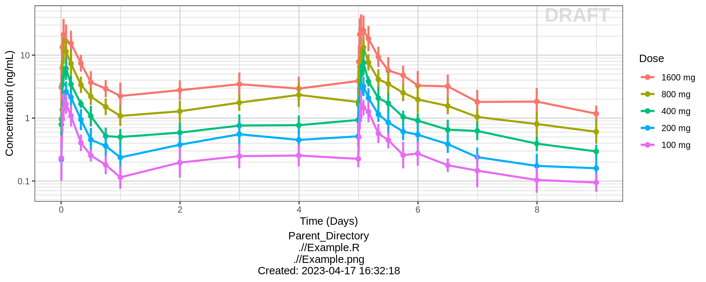
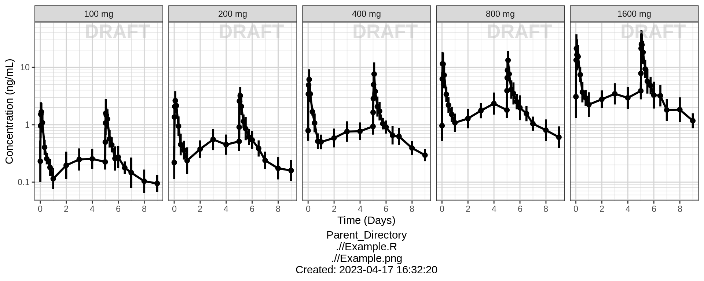
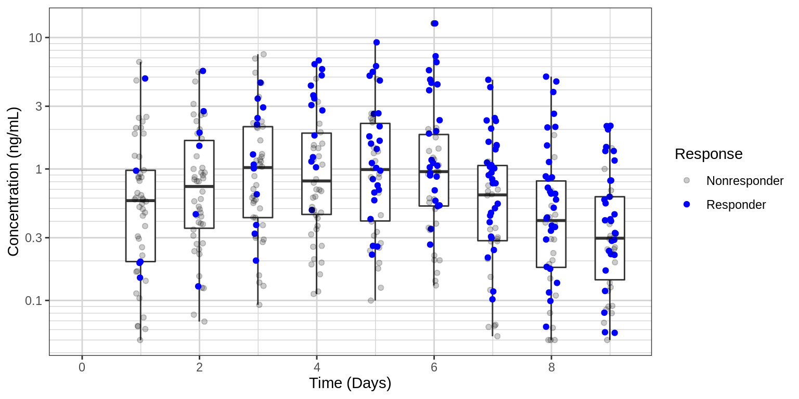
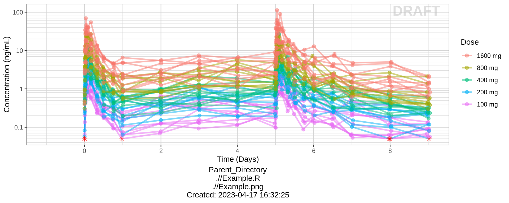
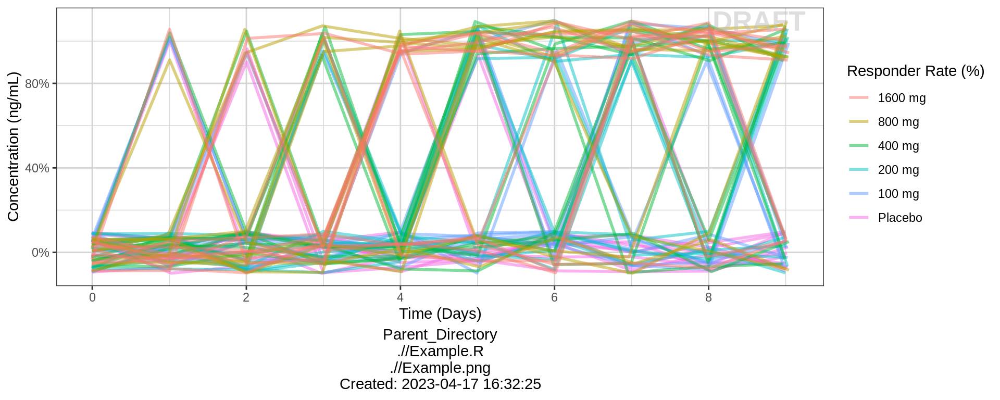
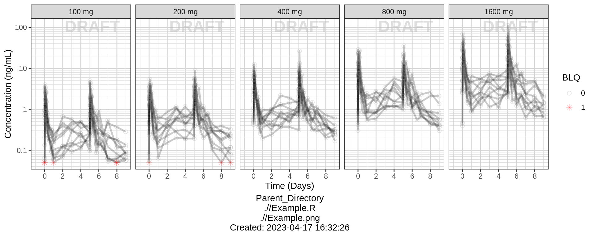
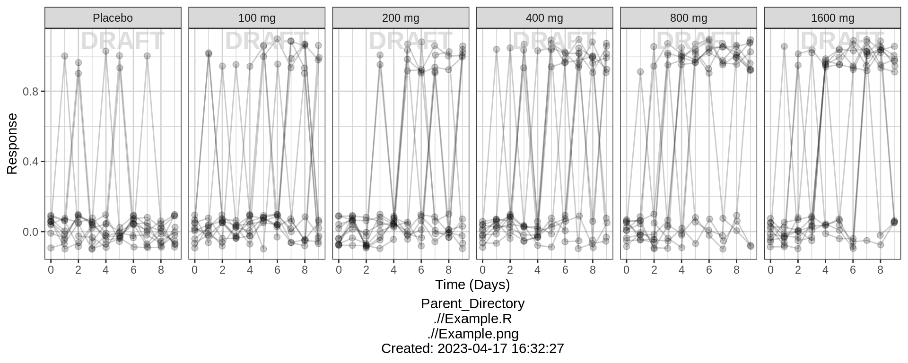
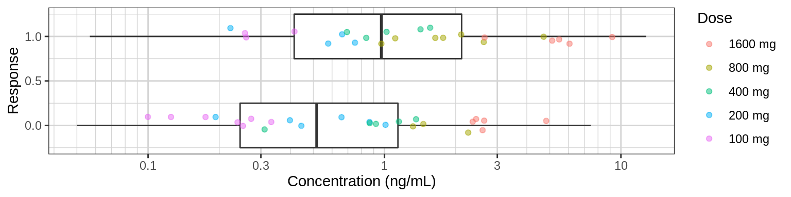

PK/PD, Exposure-Response - Binary
Alison Margolskee, Andy Stein
Overview
This document contains exploratory plots for binary response data as well as the R code that generates these graphs.The plots presented here are based on simulated data (see: PKPD Datasets). Data specifications can be accessed on Datasets and Rmarkdown template to generate this page can be found on Rmarkdown-Template. You may also download the Multiple Ascending Dose PK/PD dataset for your reference (download dataset). ## Setup
library(ggplot2)
library(dplyr)
library(xgxr)
library(tidyr)
#set seed for random number generator (for plots with jitter)
set.seed(12345)
#flag for labeling figures as draft
status = "DRAFT"
# ggplot settings
xgx_theme_set()
#directories for saving individual graphs
dirs = list(
parent_dir = "Parent_Directory",
rscript_dir = "./",
rscript_name = "Example.R",
results_dir = "./",
filename_prefix = "",
filename = "Example.png")Load Dataset
The plots presented here are based on simulated data (see: PKPD Datasets). You may also download the Multiple Ascending Dose PK/PD dataset for your reference (download dataset).
#load dataset
pkpd_data <- read.csv("../Data/Multiple_Ascending_Dose_Dataset2.csv")
DOSE_CMT = 1
PK_CMT = 2
PD_CMT = 6
SS_PROFDAY = 6 # steady state prof day
PD_PROFDAYS <- c(0, 2, 4, 6)
TAU = 24 # time between doses, units should match units of TIME, e.g. 24 for QD, 12 for BID, 7*24 for Q1W (when units of TIME are h)
#ensure dataset has all the necessary columns
pkpd_data = pkpd_data %>%
mutate(ID = ID, #ID column
TIME = TIME, #TIME column name
NOMTIME = NOMTIME,#NOMINAL TIME column name
PROFDAY = case_when(
NOMTIME < (SS_PROFDAY - 1)*24 ~ 1 + floor(NOMTIME / 24),
NOMTIME >= (SS_PROFDAY - 1)*24 ~ SS_PROFDAY
), #PROFILE DAY day associated with profile, e.g. day of dose administration
LIDV = LIDV, #DEPENDENT VARIABLE column name
CENS = CENS, #CENSORING column name
CMT = CMT, #COMPARTMENT column
DOSE = DOSE, #DOSE column here (numeric value)
TRTACT = TRTACT, #DOSE REGIMEN column here (character, with units),
LIDV_NORM = LIDV/DOSE,
LIDV_UNIT = EVENTU,
DAY_label = ifelse(PROFDAY > 0, paste("Day", PROFDAY), "Baseline"),
BINARY_LEVELS = factor(case_when(
CMT != PD_CMT ~ as.character(NA),
LIDV == 0 ~ "Nonresponder",
LIDV == 1 ~ "Responder"
), levels = c("Nonresponder", "Responder"))
)
#create a factor for the treatment variable for plotting
pkpd_data = pkpd_data %>%
arrange(DOSE) %>%
mutate(TRTACT_low2high = factor(TRTACT, levels = unique(TRTACT)),
TRTACT_high2low = factor(TRTACT, levels = rev(unique(TRTACT)))) %>%
select(-TRTACT)
#create pk dataset
pk_data <- pkpd_data %>%
filter(CMT==PK_CMT)
#create pd binary dataset
pd_data <- pkpd_data %>%
filter(CMT==PD_CMT) %>%
mutate(LIDV_jitter = jitter(LIDV, amount = 0.1))
#create wide pkpd dataset for plotting PK vs PD
pkpd_data_wide = pd_data %>%
select(ID, NOMTIME, PD = LIDV, BINARY_LEVELS) %>%
right_join(pk_data %>% select(-BINARY_LEVELS), by = c("ID", "NOMTIME")) %>%
rename(CONC = LIDV) %>%
filter(!is.na(PD))
#perform NCA, for additional plots
NCA = pk_data %>%
group_by(ID, DOSE) %>%
filter(!is.na(LIDV)) %>%
summarize(AUC_0 = ifelse(length(LIDV[NOMTIME > 0 & NOMTIME <= TAU]) > 1,
caTools::trapz(TIME[NOMTIME > 0 & NOMTIME <= TAU],
LIDV[NOMTIME > 0 & NOMTIME <= TAU]),
NA),
Cmax_0 = ifelse(length(LIDV[NOMTIME > 0 & NOMTIME <= TAU]) > 1,
max(LIDV[NOMTIME > 0 & NOMTIME <= TAU]),
NA),
AUC_tau = ifelse(length(LIDV[NOMTIME > (SS_PROFDAY-1)*24 &
NOMTIME <= ((SS_PROFDAY-1)*24 + TAU)]) > 1,
caTools::trapz(TIME[NOMTIME > (SS_PROFDAY-1)*24 &
NOMTIME <= ((SS_PROFDAY-1)*24 + TAU)],
LIDV[NOMTIME > (SS_PROFDAY-1)*24 &
NOMTIME <= ((SS_PROFDAY-1)*24 + TAU)]),
NA),
Cmax_tau = ifelse(length(LIDV[NOMTIME > (SS_PROFDAY-1)*24 &
NOMTIME <= ((SS_PROFDAY-1)*24 + TAU)]) > 1,
max(LIDV[NOMTIME > (SS_PROFDAY-1)*24 &
NOMTIME <= ((SS_PROFDAY-1)*24 + TAU)]),
NA),
SEX = SEX[1], #this part just keeps the SEX and WEIGHTB covariates
WEIGHTB = WEIGHTB[1]) %>%
gather(PARAM, VALUE,-c(ID, DOSE, SEX, WEIGHTB)) %>%
ungroup() %>%
mutate(VALUE_NORM = VALUE/DOSE,
PROFDAY = ifelse(PARAM %in% c("AUC_0", "Cmax_0"), 1, SS_PROFDAY))
#add response data at day 1 and at steady state to NCA for additional plots
NCA <- pd_data %>% subset(PROFDAY %in% c(1, SS_PROFDAY),) %>%
select(ID, PROFDAY, DAY_label, PD = LIDV, TRTACT_low2high, TRTACT_high2low) %>%
merge(NCA, by = c("ID", "PROFDAY"))
#units and labels
time_units_dataset = "hours"
time_units_plot = "days"
trtact_label = "Dose"
dose_units = unique((pkpd_data %>% filter(CMT == DOSE_CMT))$LIDV_UNIT) %>% as.character()
dose_label = paste0("Dose (", dose_units, ")")
conc_units = unique(pk_data$LIDV_UNIT) %>% as.character()
conc_label = paste0("Concentration (", conc_units, ")")
AUC_units = paste0("h.", conc_units)
concnorm_label = paste0("Normalized Concentration (", conc_units, ")/", dose_units)
pd_binary_label = "Response"
pd_response_label = "Responder Rate (%)"Binary data is data that can take on one of two values. This often happens when there is a characteristic/event/response, etc. of interest that subjects either have/achieve or they don’t. Binary response data can also come out of dichotomizing continuous data. For example in the psoriasis indication the binary response variable PASI90 (yes/no) is defined as subjects achieving a PASI score of at least 90.
There are two broad categories of PK/PD exploratory plots covered on this page
- Exposure and Response vs Time, stratified by dose. You may also have heard these referred to as longitudinal (meaning over time).
- Response vs Exposure at a particular time. For binomial response vs exposure plots, fitting a logistic regression is often helpful, as you will see below.
These plots are displayed below.
Provide an overview of the data
We start with Expsoure and Response vs Time, or longitduinal plots
Summarize data with Mean +/- 95% confidence intervals for the percent responders over time. Confidence intervals should be claculated with binom::binom.exact(). You should either color or facet by dose group.
### PK and PD marker over time, colored by Dose, mean +/- 95% CI by nominal time Questions to ask:
- How quickly does effect occur?
- Do the PK and PD profiles have the same time scale, or does the PD seem delayed?
- Is there clear separation between the profiles for different doses?
- Does the effect appear to increase (decrease) with increasing dose?
- Do you detect a saturation of the effect?
#PK data
gg <- ggplot(data = pk_data, aes(x = NOMTIME, y = LIDV, color = TRTACT_high2low))
gg <- gg + xgx_stat_ci()
gg <- gg + xgx_scale_y_log10()
gg <- gg + xgx_scale_x_time_units(units_dataset = time_units_dataset,
units_plot = time_units_plot)
gg <- gg + labs(y=conc_label,color = trtact_label)
gg <- gg + xgx_annotate_status(status)
gg <- gg + xgx_annotate_filenames(dirs)
#if saving copy of figure, replace xgx_annotate lines with xgx_save() shown below:
#xgx_save(width,height,dirs,"filename_main",status)
print(gg)
#PD data
gg <- ggplot(data = pd_data, aes(x = NOMTIME, y = LIDV, color = TRTACT_high2low))
gg <- gg + xgx_stat_ci(distribution = "binomial")
gg <- gg + xgx_scale_x_time_units(units_dataset = time_units_dataset,
units_plot = time_units_plot)
gg <- gg + scale_y_continuous(labels=scales::percent)
gg <- gg + labs(y = pd_response_label, color = trtact_label)
gg <- gg + xgx_annotate_status(status)
gg <- gg + xgx_annotate_filenames(dirs)
#if saving copy of figure, replace xgx_annotate lines with xgx_save() shown below:
#xgx_save(width,height,dirs,"filename_main",status)
print(gg)PK and PD marker over time, faceted by Dose, mean +/- 95% CI by nominal time
If coloring by dose makes a messy plot, you can try faceting by dose instead. Here we show the same data, but faceted by dose.
#PK data
gg <- ggplot(data = pk_data, aes(x = NOMTIME, y = LIDV))
gg <- gg + xgx_stat_ci()
gg <- gg + xgx_scale_y_log10()
gg <- gg + xgx_scale_x_time_units(units_dataset = time_units_dataset,
units_plot = time_units_plot)
gg <- gg + labs(y=conc_label,color = trtact_label)
gg <- gg + facet_grid(~TRTACT_low2high)
gg <- gg + xgx_annotate_status(status)
gg <- gg + xgx_annotate_filenames(dirs)
#if saving copy of figure, replace xgx_annotate lines with xgx_save() shown below:
#xgx_save(width,height,dirs,"filename_main",status)
print(gg)
#PD data
gg <- ggplot(data = pd_data, aes(x = NOMTIME, y = LIDV))
gg <- gg + xgx_stat_ci(distribution = "binomial")
gg <- gg + xgx_scale_x_time_units(units_dataset = time_units_dataset,
units_plot = time_units_plot)
gg <- gg + scale_y_continuous(labels=scales::percent)
gg <- gg + labs(y = pd_response_label, color = trtact_label)
gg <- gg + facet_grid(~TRTACT_low2high)
gg <- gg + xgx_annotate_status(status)
gg <- gg + xgx_annotate_filenames(dirs)
#if saving copy of figure, replace xgx_annotate lines with xgx_save() shown below:
#xgx_save(width,height,dirs,"filename_main",status)
print(gg)PK over time, dots colored by response type
Another longitudinal plot that can be useful for binary data is plotting the PK over time for all individuals, and coloring by response type. This plot is often used for adverse events plotting. For studies with few PK observations, a PK model may be needed in order to produce concentrations at each time point where response is measured.
gg <- ggplot(data = pkpd_data_wide, aes(x = NOMTIME, y = CONC))
gg <- gg + geom_boxplot(aes(group = factor(NOMTIME)), width = 0.5*24)
gg <- gg + geom_jitter(aes( color = factor(BINARY_LEVELS), alpha = factor(BINARY_LEVELS)), width = 0.1*24, height = 0)
gg <- gg + scale_color_manual(values = c("black","blue")) + scale_alpha_manual(values = c(0.2,1))
gg <- gg + labs(y = conc_label, color = "Response", alpha = "Response")
gg <- gg + xgx_scale_y_log10()
gg <- gg + xgx_scale_x_time_units(units_dataset = time_units_dataset,
units_plot = time_units_plot)
print(gg)
Explore Variability
PK and PD marker over time, colored by Dose, dots & lines grouped by individuals
Use spaghetti plots to visualize the extent of variability between individuals. The wider the spread of the profiles, the higher the between subject variability. Distinguish different doses by color, or separate into different panels.
When plotting individual binomial data, it is often helpful to stagger the dots and use transparency, so that it is easier to detect individual dots.
gg <- ggplot(data = pk_data, aes(x = TIME, y = LIDV))
gg <- gg + geom_line(aes(group = ID, color = factor(TRTACT_high2low)), size = 1, alpha = 0.5)
gg <- gg + geom_point(data = pk_data %>% filter(CENS==0), aes(color = TRTACT_high2low), size = 2, alpha = 0.5)
gg <- gg + geom_point(data = pk_data %>% filter(CENS==1), color="red", shape=8, size = 2, alpha = 0.5)
gg <- gg + xgx_scale_y_log10()
gg <- gg + xgx_scale_x_time_units(units_dataset = time_units_dataset,
units_plot = time_units_plot)
gg <- gg + labs(y = conc_label, color = trtact_label)
gg <- gg + xgx_annotate_status(status)
gg <- gg + xgx_annotate_filenames(dirs)
#if saving copy of figure, replace xgx_annotate lines with xgx_save() shown below:
#xgx_save(width,height,dirs,"filename_main",status)
print(gg)
gg <- ggplot(data = pd_data, aes(x = TIME, y = LIDV_jitter))
gg <- gg + geom_line(aes(group = ID, color = factor(TRTACT_high2low)), size = 1, alpha = 0.5)
gg <- gg + xgx_scale_x_time_units(units_dataset = time_units_dataset,
units_plot = time_units_plot)
gg <- gg + scale_y_continuous(labels=scales::percent)
gg <- gg + labs(y = conc_label, color = pd_response_label)
gg <- gg + xgx_annotate_status(status)
gg <- gg + xgx_annotate_filenames(dirs)
#if saving copy of figure, replace xgx_annotate lines with xgx_save() shown below:
#xgx_save(width,height,dirs,"filename_main",status)
print(gg)
PK and PD marker over time, faceted by Dose, dots & lines grouped by individuals
gg <- ggplot(data = pk_data, aes(x = TIME, y = LIDV))
gg <- gg + geom_line(aes(group = ID), size = 1, alpha = 0.2)
gg <- gg + geom_point(aes(color = factor(CENS), shape = factor(CENS), alpha = 0.3), size = 2, alpha = 0.2)
gg <- gg + scale_shape_manual(values=c(1,8))
gg <- gg + scale_color_manual(values=c("grey50","red"))
gg <- gg + xgx_scale_y_log10()
gg <- gg + xgx_scale_x_time_units(units_dataset = time_units_dataset,
units_plot = time_units_plot)
gg <- gg + labs(y = conc_label, shape = "BLQ", color = "BLQ")
gg <- gg + facet_grid(.~TRTACT_low2high)
gg <- gg + xgx_annotate_status(status)
gg <- gg + xgx_annotate_filenames(dirs)
#if saving copy of figure, replace xgx_annotate lines with xgx_save() shown below:
#xgx_save(width,height,dirs,"filename_main",status)
print(gg)
gg <- ggplot(data = pd_data, aes(x = TIME, y = LIDV_jitter))
gg <- gg + geom_line(aes(group = ID), alpha = 0.2)
gg <- gg + geom_point(size = 2, alpha = 0.2)
gg <- gg + xgx_scale_x_time_units(units_dataset = time_units_dataset,
units_plot = time_units_plot)
gg <- gg + labs(y = pd_binary_label, shape = "BLQ", color = "BLQ")
gg <- gg + facet_grid(.~TRTACT_low2high)
gg <- gg + xgx_annotate_status(status)
gg <- gg + xgx_annotate_filenames(dirs)
#if saving copy of figure, replace xgx_annotate lines with xgx_save() shown below:
#xgx_save(width,height,dirs,"filename_main",status)
print(gg)
Explore Exposure-Response Relationship
gg <- ggplot(data = pkpd_data_wide, aes(y = CONC, x = PD))
gg <- gg + geom_boxplot(aes(group = PD), width = 0.5, outlier.shape=NA)
gg <- gg + geom_jitter(data = pkpd_data_wide %>% filter(CENS == 0, PROFDAY == 5),
aes(color = TRTACT_high2low), shape=19, width = 0.1, height = 0.0, alpha = 0.5)
gg <- gg + geom_jitter(data = pkpd_data_wide %>% filter(CENS == 1, PROFDAY == 5),
color = "red", shape=8, width = 0.1, height = 0.0, alpha = 0.5)
gg <- gg + xgx_scale_y_log10()
gg <- gg + labs(x = pd_binary_label, y = conc_label, color = trtact_label)
gg <- gg + coord_flip()
print(gg) Plot response against exposure. Include a logistic regression for binary data to help determine the shape of the exposure-respone relationship. Summary information such as mean and 95% confidence intervals by quartiles of exposure can also be plotted. The exposure metric that you use in these plots could be either raw concentrations, or NCA or model-derived exposure metrics (e.g. Cmin, Cmax, AUC), and may depend on the level of data that you have available.
pkpd_data_wide_plot = pkpd_data_wide %>%
mutate(PROFDAY_STR = paste("Day",PROFDAY)) %>%
filter(PROFDAY %in% c(1,3,5)) %>%
mutate(CONC_QUART = cut(CONC, quantile(CONC, na.rm=TRUE), na.rm=TRUE, include.lowest = TRUE)) %>%
group_by(CONC_QUART) %>%
mutate(CONC_MIDPOINT = median(CONC))
gg <- ggplot(data = pkpd_data_wide_plot, aes(x = CONC, y = PD))
gg <- gg + geom_jitter(aes(color = TRTACT_high2low), width = 0, height = 0.05, alpha = 0.5)
gg <- gg + geom_smooth(method = "glm", method.args = list(family=binomial(link = logit)), color = "black")
gg <- gg + xgx_stat_ci(aes(x = CONC_MIDPOINT, y = PD), distribution = "binomial", geom = "errorbar", size = 0.5)
gg <- gg + xgx_stat_ci(aes(x = CONC_MIDPOINT, y = PD), distribution = "binomial", geom = "point", shape = 0, size = 4)
gg <- gg + scale_y_continuous(labels=scales::percent)
gg <- gg + labs(x = conc_label, y = pd_response_label, color = trtact_label)
gg <- gg + xgx_scale_x_log10()
gg <- gg + facet_grid(~PROFDAY_STR)
print(gg) Plotting AUC vs response instead of concentration vs response may make more sense in some situations. For example, when there is a large delay between PK and PD it would be diffcult to relate the time-varying concentration with the response. If rich sampling is only done at a particular point in the study, e.g. at steady state, then the AUC calculated on the rich profile could be used as the exposure variable for a number of PD visits. If PK samples are scarce, average Cmin could also be used as the exposure metric.
Plotting AUC vs response instead of concentration vs response may make more sense in some situations. For example, when there is a large delay between PK and PD it would be diffcult to relate the time-varying concentration with the response. If rich sampling is only done at a particular point in the study, e.g. at steady state, then the AUC calculated on the rich profile could be used as the exposure variable for a number of PD visits. If PK samples are scarce, average Cmin could also be used as the exposure metric.
NCA_plot = NCA %>%
group_by(PARAM) %>%
mutate(VALUE_QUART = cut(VALUE, quantile(VALUE, na.rm=TRUE), na.rm=TRUE, include.lowest = TRUE)) %>%
group_by(PARAM, VALUE_QUART) %>%
mutate(VALUE_MIDPOINT = median(VALUE))
gg <- ggplot(NCA_plot, aes(x = VALUE, y = PD))
gg <- gg + geom_jitter(aes( color = TRTACT_high2low), width = 0, height = 0.05, alpha = 0.5)
gg <- gg + geom_smooth(method = "glm", method.args = list(family=binomial(link = logit)), color = "black")
gg <- gg + xgx_stat_ci(mapping = aes(x = VALUE_MIDPOINT, y = PD),
conf_level = 0.95, distribution = "binomial", geom = c("point"), shape = 0, size = 4)
gg <- gg + xgx_stat_ci(mapping = aes(x = VALUE_MIDPOINT, y = PD),
conf_level = 0.95, distribution = "binomial", geom = c("errorbar"), size = 0.5)
gg <- gg + facet_wrap(~DAY_label + PARAM, scales = "free_x")
gg <- gg + labs(color = trtact_label, x = "NCA parameter", y = pd_response_label)
gg <- gg + xgx_scale_x_log10()
gg <- gg + scale_y_continuous(breaks=c(0,.5,1), labels = scales::percent)
print(gg)Explore covariate effects on Exposure-Response Relationship
Stratify exposure-response plots by covariates of interest to explore whether any key covariates impact response independent of exposure. For examples of plots and code startifying by covariate, see Continuous PKPD Covariate Section ## R Session Info
sessionInfo()## R version 4.1.0 (2021-05-18)
## Platform: x86_64-pc-linux-gnu (64-bit)
## Running under: Red Hat Enterprise Linux
##
## Matrix products: default
## BLAS/LAPACK: /CHBS/apps/EB/software/imkl/2019.1.144-gompi-2019a/compilers_and_libraries_2019.1.144/linux/mkl/lib/intel64_lin/libmkl_gf_lp64.so
##
## Random number generation:
## RNG: Mersenne-Twister
## Normal: Inversion
## Sample: Rounding
##
## locale:
## [1] LC_CTYPE=en_US.UTF-8 LC_NUMERIC=C LC_TIME=en_US.UTF-8 LC_COLLATE=en_US.UTF-8
## [5] LC_MONETARY=en_US.UTF-8 LC_MESSAGES=en_US.UTF-8 LC_PAPER=en_US.UTF-8 LC_NAME=C
## [9] LC_ADDRESS=C LC_TELEPHONE=C LC_MEASUREMENT=en_US.UTF-8 LC_IDENTIFICATION=C
##
## attached base packages:
## [1] stats graphics grDevices utils datasets methods base
##
## other attached packages:
## [1] survminer_0.4.9 ggpubr_0.4.0 survival_3.2-11 knitr_1.33 broom_0.7.9 caTools_1.18.2 DT_0.18
## [8] forcats_0.5.1 stringr_1.4.0 purrr_0.3.4 readr_2.0.1 tibble_3.1.3 tidyverse_1.3.1 zoo_1.8-9
## [15] xgxr_1.1.1 gridExtra_2.3 tidyr_1.1.3 dplyr_1.0.7 ggplot2_3.3.5
##
## loaded via a namespace (and not attached):
## [1] colorspace_2.0-2 ggsignif_0.6.2 rio_0.5.27 ellipsis_0.3.2 class_7.3-19
## [6] rsconnect_0.8.24 htmlTable_2.2.1 markdown_1.1 base64enc_0.1-3 fs_1.5.0
## [11] gld_2.6.2 rstudioapi_0.13 proxy_0.4-26 farver_2.1.0 Deriv_4.1.3
## [16] fansi_0.5.0 mvtnorm_1.1-2 lubridate_1.7.10 xml2_1.3.2 codetools_0.2-18
## [21] splines_4.1.0 rootSolve_1.8.2.2 Formula_1.2-4 jsonlite_1.7.2 km.ci_0.5-2
## [26] binom_1.1-1 cluster_2.1.2 dbplyr_2.1.1 png_0.1-7 compiler_4.1.0
## [31] httr_1.4.2 backports_1.2.1 assertthat_0.2.1 Matrix_1.3-3 cli_3.0.1
## [36] prettyunits_1.1.1 htmltools_0.5.1.1 tools_4.1.0 gtable_0.3.0 glue_1.4.2
## [41] lmom_2.8 Rcpp_1.0.7 carData_3.0-4 cellranger_1.1.0 jquerylib_0.1.4
## [46] vctrs_0.3.8 nlme_3.1-152 crosstalk_1.1.1 xfun_0.25 openxlsx_4.2.4
## [51] rvest_1.0.1 lifecycle_1.0.0 rstatix_0.7.0 MASS_7.3-54 scales_1.1.1
## [56] hms_1.1.0 expm_0.999-6 RColorBrewer_1.1-2 curl_4.3.2 yaml_2.2.1
## [61] Exact_2.1 KMsurv_0.1-5 pander_0.6.4 sass_0.4.0 rpart_4.1-15
## [66] reshape_0.8.8 latticeExtra_0.6-29 stringi_1.7.3 highr_0.9 e1071_1.7-8
## [71] checkmate_2.0.0 zip_2.2.0 boot_1.3-28 rlang_0.4.11 pkgconfig_2.0.3
## [76] bitops_1.0-7 evaluate_0.14 lattice_0.20-44 htmlwidgets_1.5.3 labeling_0.4.2
## [81] tidyselect_1.1.1 GGally_2.1.2 plyr_1.8.6 magrittr_2.0.1 R6_2.5.1
## [86] DescTools_0.99.42 generics_0.1.0 Hmisc_4.5-0 DBI_1.1.1 pillar_1.6.2
## [91] haven_2.4.3 foreign_0.8-81 withr_2.4.2 mgcv_1.8-35 abind_1.4-5
## [96] RCurl_1.98-1.4 nnet_7.3-16 car_3.0-11 modelr_0.1.8 crayon_1.4.1
## [101] survMisc_0.5.5 utf8_1.2.2 tzdb_0.1.2 rmarkdown_2.11 jpeg_0.1-9
## [106] progress_1.2.2 grid_4.1.0 readxl_1.3.1 minpack.lm_1.2-1 data.table_1.14.0
## [111] reprex_2.0.1 digest_0.6.27 xtable_1.8-4 munsell_0.5.0 bslib_0.2.5.1